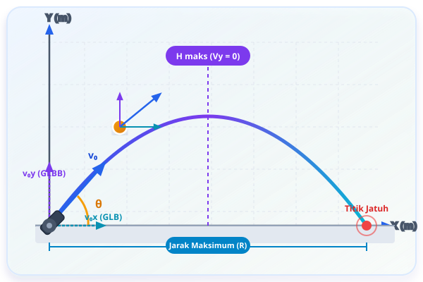

Selamat Datang di PARABOLearn
Explore the Motion, Understand the Physics!
Pernah merasa fisika itu susah dan penuh rumus abstrak? Di PARABOLearn, kamu bisa belajar konsep Gerak Parabola dengan cara yang seru lewat animasi bergerak, laboratorium simulasi virtual, latihan soal interaktif, dan penjelasan yang ramah seperti buku pelajaran favoritmu!

Apa yang Akan Kamu Kuasai? 🎯
Setelah belajar di PARABOLearn, kamu bakal jago memahami dan menyelesaikan soal-soal gerak parabola Kurikulum Merdeka!
1. Paham Konsep Dasar
Mampu menjelaskan kenapa lintasan bola bisa melengkung akibat gabungan gerak santai mendatar (GLB) dan tarikan gravitasi (GLBB).
2. Jago Membaca Panah Vektor
Bisa menguraikan kecepatan awal menjadi kecepatan maju (Vx) dan kecepatan lambung (Vy) tanpa takut salah.
3. Tahu Rahasia Sudut Emas
Mampu membuktikan kenapa sudut 45° menghasilkan tembakan paling jauh dan sudut kembar (30° & 60°) jatuh di titik yang sama.
4. Mahir Menghitung Rumus
Bisa menghitung waktu ke puncak, lama melayang di udara, tinggi maksimum, dan jarak terjauh dengan langkah teratur.
5. Melakukan Eksperimen Virtual
Bisa menguji hipotesismu sendiri di laboratorium simulasi seperti seorang ilmuwan muda.
6. Menghubungkan ke Dunia Nyata
Mampu menerapkan konsep gerak parabola pada tendangan bola sepak, lemparan basket, pancaran air, hingga roket air!
Fitur Asyik di PARABOLearn ✨
Dibuat khusus supaya kamu nggak bosen dan bisa belajar fisika dengan santai tapi nempel di otak!
Materi Bahasa Santai
5 bab materi yang ditulis komunikatif seperti buku cerita bergambar, lengkap dengan contoh sepak bola dan basket.
Buka Materi →Eksplorasi Panah Vektor
Geser posisi bola sesukamu untuk melihat bagaimana panah kecepatan horizontal dan vertikal berubah bentuk!
Eksplorasi Vektor →Animasi Gerak 60 FPS
Tonton proyektil meluncur mulus dengan tombol Play, Pause, Replay, serta mode gerak lambat (slow motion).
Lihat Animasi →Laboratorium Virtual
Putar laras meriam, ganti tempat ke Bulan atau Mars, tembakkan peluru, dan bandingkan lintasannya secara langsung!
Mulai Simulasi →Latihan & Pembahasan
10 soal latihan interaktif yang langsung memberi tahu kamu apakah jawabanmu benar atau salah beserta alasannya.
Kerjakan Latihan →Ujian Evaluasi & Skor
15 soal tes akhir berwaktu. Nilaimu langsung dihitung otomatis dan kamu bisa mencetak laporan hasil belajarmu!
Mulai Evaluasi →Siap Jadi Juara Fisika di Kelasmu? 🚀
Mulai dari membaca petunjuk santai, pelajari materinya, coba laboratorium virtualnya, dan raih nilai terbaik di evaluasi akhir!